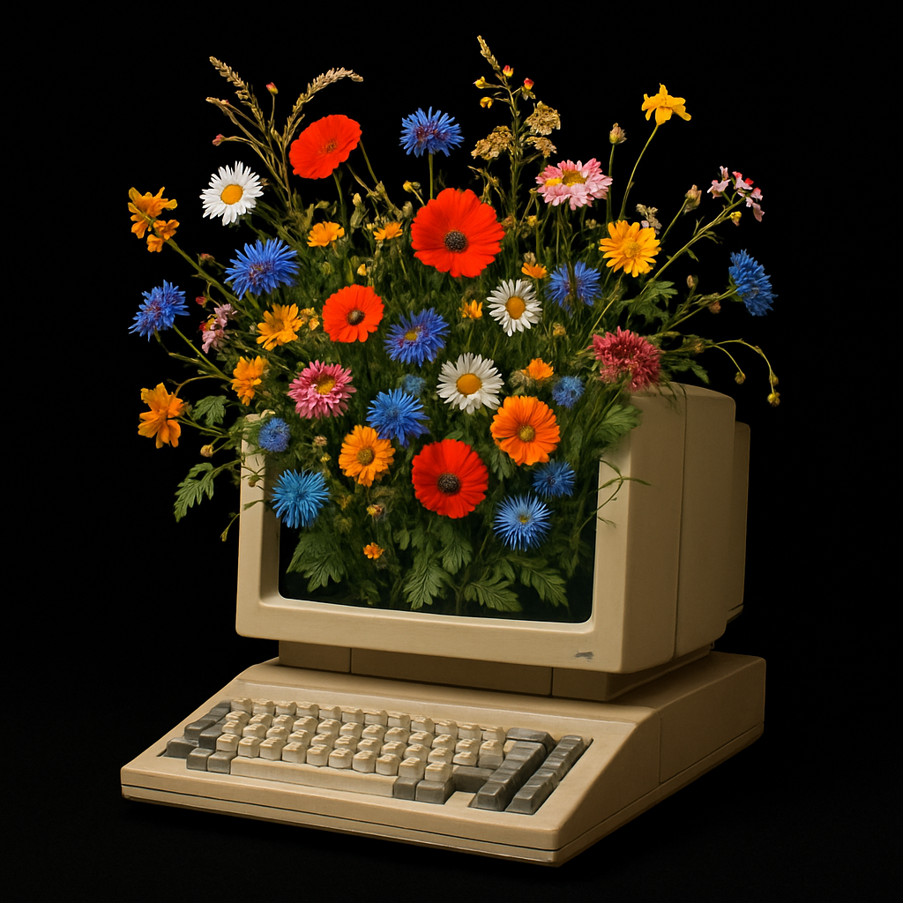
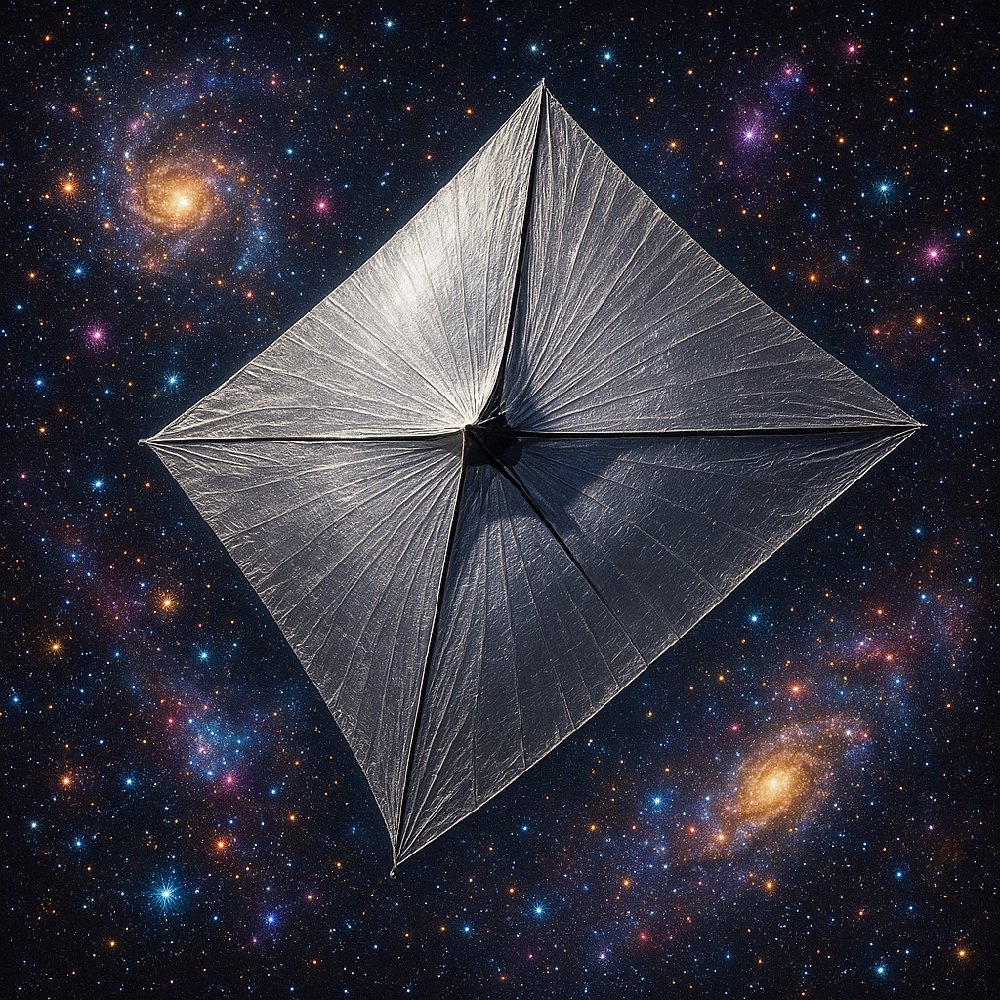
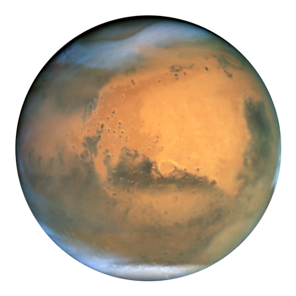

"The Autotrophs" wonders what life on Earth might become on a Dyson Sphere given enough time.

"Creative Computer" asks questions about human creativity in the face of generative artificial intelligence.

"Starkite" is a short story about multigenerational projects, what is worth doing, and human exploration of the cosmos.

"Solarium" is about life and revolution on an O'Neill cylinder space habitat at the Earth-Sun Lagrange 5 point. Art by Rick Guidice.

"A Brief History of Mars" is a short story exploring the lives of two intrepid rovers on Mars.